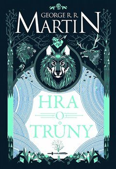

Autor: George R. R. Martin
®ánr: Fantasy
Hodnocení: + 2
Úvodní èást epického fantasy eposu odehrávajícího se ve svìtì temného støedovìku, mezi stateènými rytíøi, mocnými èarodìji, draky, zlovlky a èarostromy... Jako strá¾ce severu lord Stark pova¾uje za prokletí, kdy¾ ho král Robert povìøí úøadem poboèníka vladaøe a vy¹le ho na jih, odkud se zatím nikdo z jeho rodiny nevrátil. Bezejmenní staøí bohové nemají na jihu ¾ádnou moc, Starkova rodina je brzy rozdìlena a poboèník sám je polapen do sítì nebezpeèných intrik. Ba co hùø, v exilu ve Svobodných mìstech za moøem dospìl pomstou posedlý chlapec. Jako dìdic ¹íleného Draèího krále, jeho¾ rodina byla vyvra¾dìna, si dìlá nárok na trùn.
George R. R. Martin stvoøil komplexní a mnohavrstevný svìt, kde se politické intriky velkých rodù mísí s dramatickými osudy jednotlivcù. Nikdo není zcela na stranì dobra èi zla, i na první pohled kladné postavy mají své temné stránky a naopak. Do pøíbìhu, který pøipomíná støedovìký boj o moc mezi relativnì málo poèetnými rody, pronikají prvky ¾ánru fantasy, které jsou v¹ak do celku vèlenìny nenásilnì a organicky.
- klubknihomolu.cz
Robert Potocký

Ano, takhle kniha má ú¾asný svìt, jaký se jen tak nevidí. Autor v¹echno krásnì propracoval a promyslel. Muselo mu dát neskuteènì práce nìco takového stvoøit. Èetla jsem pomìrnì hodnì knih ze støedovìku, ale snad ¾ádný autor nedokázal tak vìrnì popsat toto období. Je opravdu vidìt, ¾e Martin tomu, o èem pí¹e rozumí a má rozsáhle znalosti. Jak jsem øekla, svìt je obdivuhodný, ale síla tohoto pøíbìhu tkví v postavách...